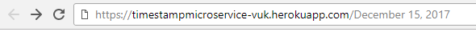
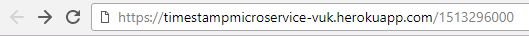

Timestamp Microservice
The purpose of this project is to make server responds to a user with a Date JSON object to user input. User can type in the date directly in the textfield above, or in the address bar
Examples of direct address bar use
- String format:
- Unix format: 
For GitHub Project click here - >